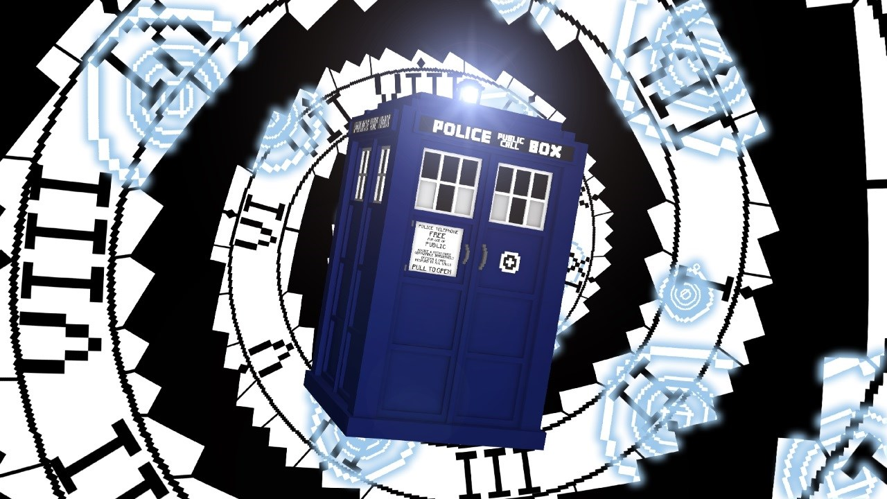
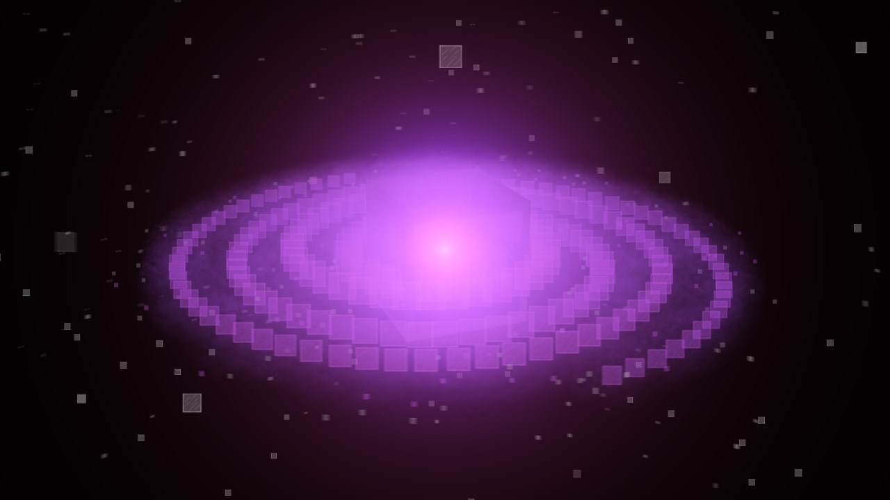

TempusWare
TempusWare is a 14 year old beginner in animation and VFX. Several works of his include fan-made videos of Doctor Who, Minecraft and Club Penguin.
Since starting in late 2014, he has gained an audience of over 3000+ as of 2017.
He is the editor and co-producer of #WaddleOnRewritten, viewable here.

